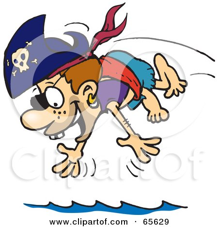

Skills
Sailing
2 years experience

Navigation
3 years experience
Knot tying
3 years experience
Deck swabbing
6 years experience
Treasure hunting
1 year experience

Swimming
2 years experience
I am a pirate with 2 years of experience in both freelance piracy and privateering. I have worked on ships and vessels deployed with the IBM Fleet. I am an avid user of IBM Cannon Services and have sailed under Captain Watson, Sir NLU, and Snt Analyzer to name a few.
2 years experience
3 years experience
3 years experience
6 years experience
1 year experience
2 years experience